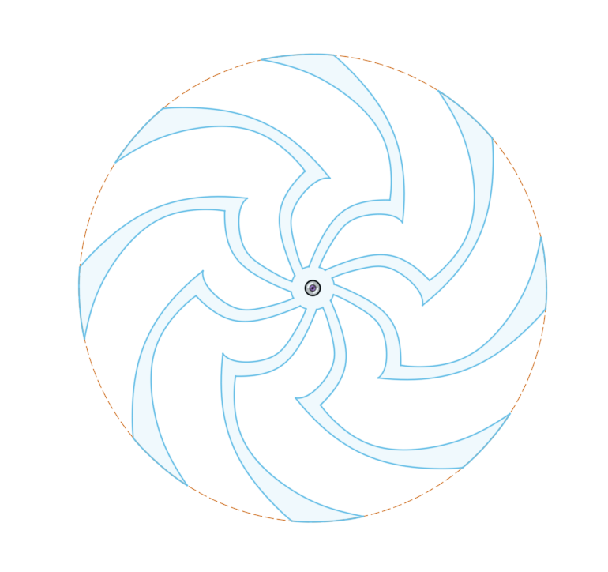
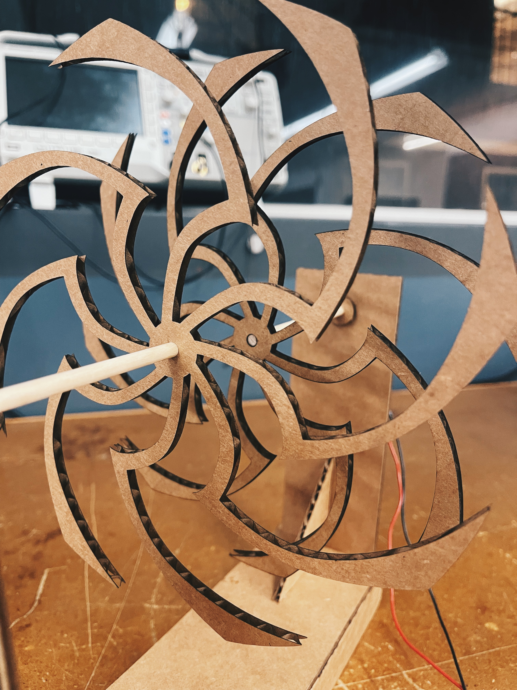
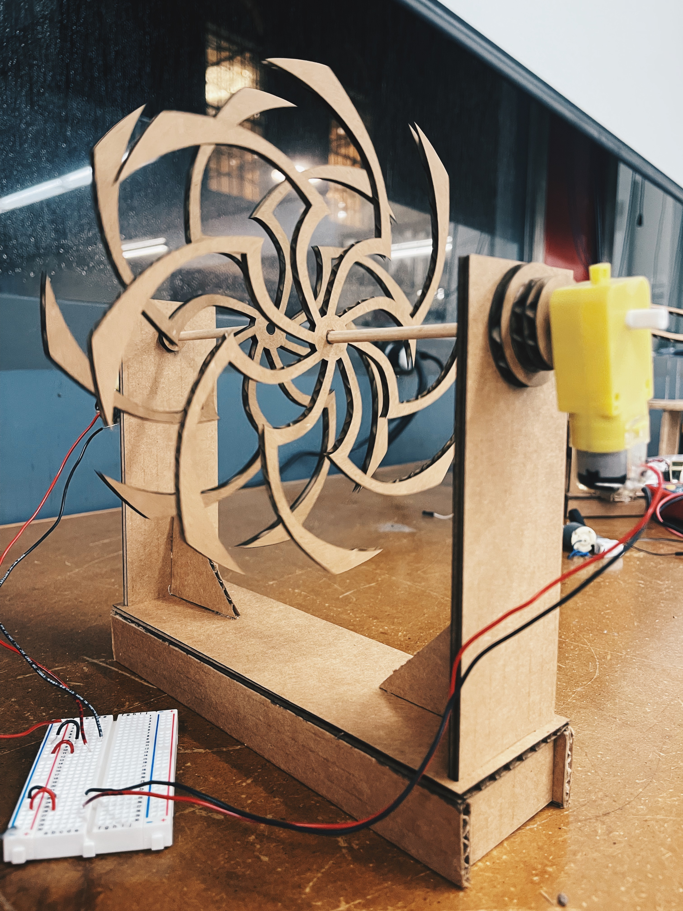

Welcome to my PS70 portfolio! Here you will find weekly progress of my digital fabrication journey.
03: hand tools and fabrication
Kinetic Sculpture
This week, we were tasked with creating a kinetic sculpture. I was inspired by a Japanese woodworker on Youtube. I modelled a spiral in Fusion360 and was curious to see what it would look like before committing to laser cutting it so I created joints with the pieces and animated it!


I went through a lot of trial and error to figure out how to attach the spiral to the dowel and motor and making sure the pieces weren't too tight/loose. I then attached the motor to see if it could actually turn the spiral - it worked!
I also added another piece to the inside of the axel to prevent the dowel from sliding outwards when it spins.


Because I wanted the spirals to rotate in opposite directions, I had to use two motors. I realized that if the spirals are too close to the side panel, then it would be hard to see the illusion effect straight on or from an angle, so I increased the length of the dowel. After asssembling all the pieces, I connected both motors to a breadboard and then hooked them up to the power supply.




Improvements
Because the motor was attached freely to the axel, it would wiggle around a lot or fall off if I increased the voltage too much. In the next iteration, I would add a structure to the outside of the side panel to secure the motor in place. I'd also add a potentiometer to the circuit and connect it to an Arduino so I can power it using my laptop or a battery.
Another area of improvement is to bring the two spirals closer together by making the base piece a bit shorter. I secured the dowels and frame pieces before I attached the spiral, so by the time I realized they were too far apart, it was too late to change the dowel or shorten the frame. Next time I'll know to test-assmeble everything before securing them in place!